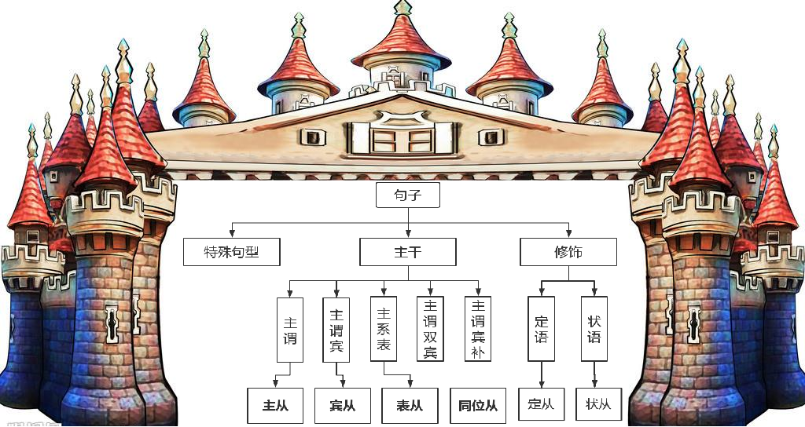

time: 00:28:45
上一个视频留的作业
漫画中站着一只做承诺的母鸡。
谓语动词: 站着
主语: 一只做承诺的母鸡 + 站着 + 在漫画中.
=> A hen stands in the cartoon.
=> A hen making the promise stands in the cartoon.
沙发上坐着一位边看电视边抽烟的父亲。
=> 一位边看电视边抽烟的父亲坐在沙发上.
谓语动词: 坐
中心语: 一位父亲坐在沙发上.
=> A father sits on the sofa. //A father is siting on the sofa.
=> A father watching television and smoking sits on the sofa.
桌边坐着一位和孩子一起专注学习的父亲。
=> 一位父亲和孩子坐在桌边一起专注学习.
=> A father sits nearby by the desk. //自己的, 对否??
=> A father with hes son sits nearby by the desk. //自己的, 对否??
//at table/desk 表示学习/工作/伏案工作 一种状态
//at the table/desk 吃饭时/在桌子旁
//go to hospital 去医院看病(不是去医院)
//go to the hospital 去医院/去医院上班
=> A father sits at table/desk.
=> A father studying with his child sits at table/desk.
time: 00:37:45
阁下就是当年号称一朵梨花压海棠的少林寺智障大师收养的小沙弥低能的爱犬旺财踩扁的蟑螂小强曾滚过的一个粪球。
谓语动词: 是 //系动词
中心语: 阁下就是一个粪球.
主语: 阁下
阁下就是(当年)(号称一朵梨花压海棠的)(少林寺智障大师)(收养的)小沙弥(低能的爱犬旺财)(踩扁的)(蟑螂小强)(曾滚过的)一个粪球。
当年: 时间介词短语
号称:
=> 粪球 被滚过 by 蟑螂 被踩扁 by 低能的爱犬旺财 of 小沙弥 被生养的 by 智障大师 in 少林寺 号称ing[主动自称] 一朵梨花压海棠的 in the year.
time: 00:43:58
5.进阶篇: 状语分析

状语的作用: 状态语
状语: 除定语以外的修饰语.
玉皇大帝他表舅干儿子二姨妈小叔子三姨太的小弟昨晚在CK店犯抽抽地买了条1000元和超人一模一样的蓝秋裤，尽管他穿上去以后不会飞。
主干: 买秋裤
定语: 玉皇大帝他表舅干儿子二姨妈小叔子三姨太的
1000元和超人一模一样的
去掉定语后:
小弟昨晚在CK店犯抽抽地买了条蓝秋裤，尽管他穿上去以后不会飞。
状语: 昨晚 时间状语
在CK店 地点状语
犯抽抽地 修饰谓语动词, 表程度
尽管他穿上去以后不会飞 句子, 状语从句, 让步状语从句
time: 00:48:45
二、状语的形式词汇：
1. 词汇
adv. (-ly) often,nenver,always...频度； relly,deeply,extremely...程度（加强语气）
Science moves forward.(真题) forward adv.向前地. 表移动的方向
It's deliciously ironic.(真题) deliciously adv.美味地 在这儿表示程度=very ironic, 非常讽刺, 及其讽刺
I can't possibly tell you that.(真题) possibly
Elizabeth looks impossibly handsome.(名著) impossibly adv.不可能地, 难以置信地 在这儿表示程度=very
否定副词：hardly/ barely/rarely/ scarcely/ few/ little/ never
2.短句
dong...
to do...
done...
adj...
prep...
In 2015, I bought a book.
I bought a book, in 2015.
I, in 2015, bought a book.
我是女生, 快乐的女生. //快乐的: 定语
我是女生, 快乐地工作. //快乐地: 状语
3.句子
time: 01:02:10
四、状语的修饰与含义
1、词汇：就近修饰 v. / adj. / adv.
I deeply love you. //deeply 修饰 love
I love you deeply. //deeply 修饰 love(最近的那个动词)
Very quietly I leave. //quietly 修饰 leave, Very(adv.) 修饰 quietly
The American economic system is organized around a basically private-enterprise, market-oriented economy. (1994)
谓语动词: is organized, 被动语态. 基本所有的被动语态都是主谓结构, 主谓
economic system 经济体制,经济体系,经济系统
organized adj.有组织的, 安排有秩序的, 做事有条理的, v. 组织
enterprise /ˈentəpraɪz/ n. 企业；事业；进取心；事业心
market-oriented economy 市场导向经济, 对前面句子的总结说明
basically: 修饰 organized v. 组织
A.美国经济体由基本私企组成, 市场导向经济。
B.美国经济体基本由私企组成, 市场导向经济。√
time: 01:17:55
修饰集团大哥之争
With a sincere heart, I love Saney. With a sincere heart状语. 怀着真诚的心, 我爱上了思斐老师.
With a sincere heart I love Saney. With a sincere heart状语. I love Saney,主谓宾, 所有前方是状语.
I love Saney, with a sincere heart. With a sincere heart状语.
I love Saney with a sincere heart. with a sincere heart定语. 我爱着怀着真诚心的思斐老师. Saney是名词, 后方是后置定语
条件 | 语义接受 | 语义障碍 |
前有名词 | 定(哥) | 状 |
前无名词 | 状 | —— |
time: 01:26:09
判断介词短语是 定语 or 状语
1.I read the book in 2018. 定语, in 2018修饰book. 我阅读了2018年的书... 不要翻译成: 我在2018年阅读了书.
2.I came to Wendu in 2018. 状语, in 2018修饰Wendu语义障碍, 所以修饰的是I. 2018年我来到文都.
3.We can hardly agree that those so-called fun behaviors should go on to exist with regard to health problems.(真题)
hardly adv. 几乎不，简直不；刚刚
so-called 所谓的
=> 我们反对这些 所谓的 娱乐 行为 继续存在下去, 关于健康问题.
=> 就健康问题而言, 我们反对这些所谓的娱乐行为继续存在下去.
状语, 因为前面 exist 是.vi
4.The department is reviewing its policy with regard to abortion.(真题)
department n. 部；部门；系；科；局
reviewing /rɪˈvjuːɪŋ/ n. 回顾；评估；修订 v. 回顾；复习（review的ing形式）；检验 审查
policy /ˈpɒləsi/ n. 政策，方针；保险单
regard /rɪˈɡɑːd/ n. 注意；尊重；问候；凝视 vt. 注重，考虑；看待；尊敬 vi. 注意，注重；注视
with regard to 关于, 至于, 对于, 就
abortion /əˈbɔːʃn/ n. 流产，堕胎，小产；流产的胎儿；（计划等）失败，夭折
with regard to abortion: 关于流产, 修饰前方的policy 政策
=> 这个部门正在审查关于堕胎的政策.
定语, policy是.n, with regard to abortion修饰 policy, 语义能接收
定语: 放到名词位置翻译.
状语: 和句子主语保持一致性.
3、非谓语动词 doing/ to do/ done
| 语态 | 含义 |
doing | 主动 | 伴随/因果 |
to do | 主 | 目的/因果/ |
done | 被 | 伴随/因果 |
判断下方句子前后是什么逻辑
1.Smiling, she answered “thank you”.
Smiling doing形式, 前方没名词, 是状语, 和 answered 是伴随关系, 是伴随状语
2.Driving the car, he did not want to talk.
伴随/原因状语
3.To please her mother-in-law, she brought her a gift. //为了取悦她的婆婆，她给婆婆带了一件礼物。
To do形式, 原因状语
4.To pass the test, he works hard.
同上
5.Surprised by the answer, the teacher could not say a word.
done形式, 原因状语
6.Exhausted, we persist.
Exhausted /ɪɡˈzɔːstɪd/ adj. 筋疲力尽的，疲惫不堪的；耗尽的，枯竭的 v. 使……精疲力尽；耗尽(exhaust 的过去式和过去分词)
persist /pəˈsɪst/ vi. 存留，坚持；持续，固执 vt. 坚持说，反复说
转折/让步/伴随状语